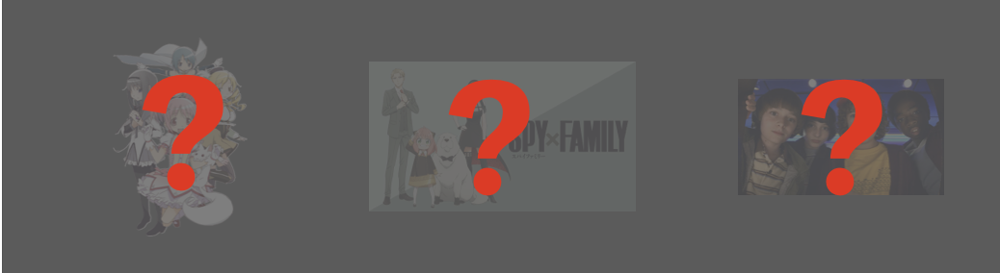
Identity V コラボ予想大特集
第五人格の雰囲気にマッチした最高のコラボ候補を徹底分析！
ファンの熱い期待と実現可能性を詳しく解説します
📚 これまでの主要コラボ実績
デスノート
心理戦と推理要素が第五人格の世界観と完璧にマッチした伝説のコラボ
約束のネバーランド
脱出ゲームという共通点から生まれた人気コラボ
ダンガンロンパ
犯人を探し、吊っていくサスペンスホラー
ペルソナ5
怪盗団の世界観とゴシックホラーの絶妙な融合
魔法少女まどか☆マギカ
🔮 コラボが期待される理由
⏰ 予想タイムライン
2025年春〜夏： まどマギの新プロジェクトや記念年と連動したコラボ発表の可能性が高い。特に4月の新年度シーズンや夏のアニメイベント時期が狙い目。
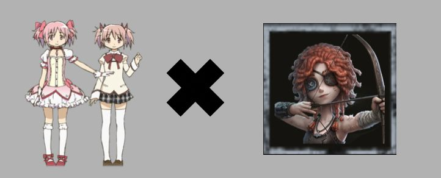
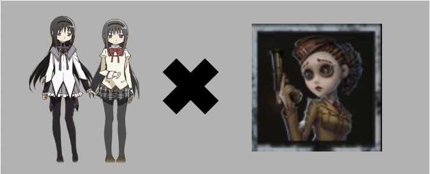
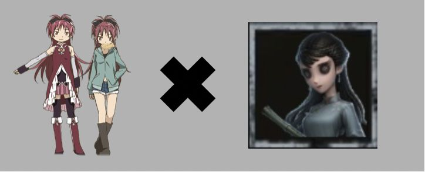
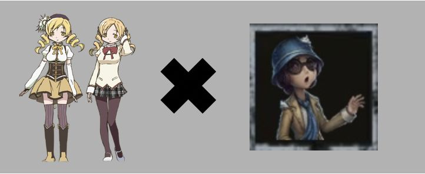
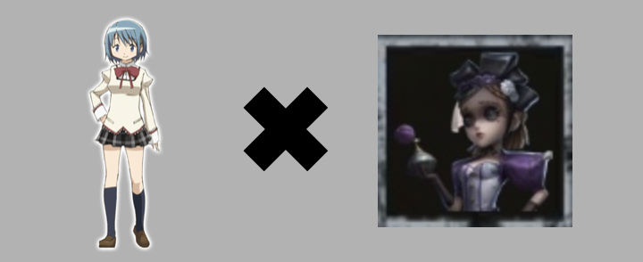
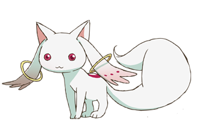
🐱 きゅうべえ × 特別ペット
契約を迫る不気味な可愛さが第五人格の世界観に完璧にフィット！プレイヤーを見つめる赤い瞳が恐怖感を演出し、ゲームの緊張感を高める最高のペット候補。
ストレンジャー・シングス
🎬 コラボが期待される理由
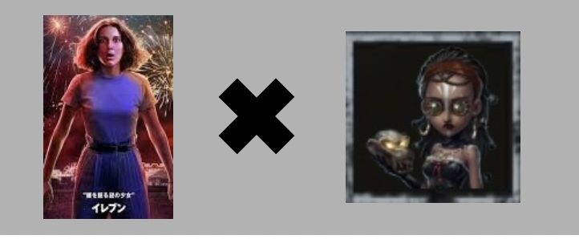
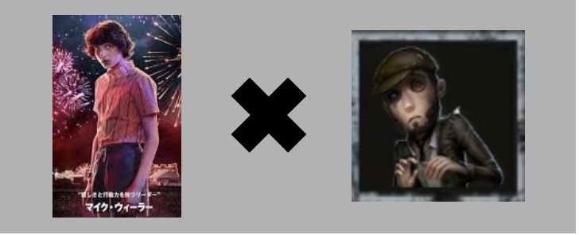
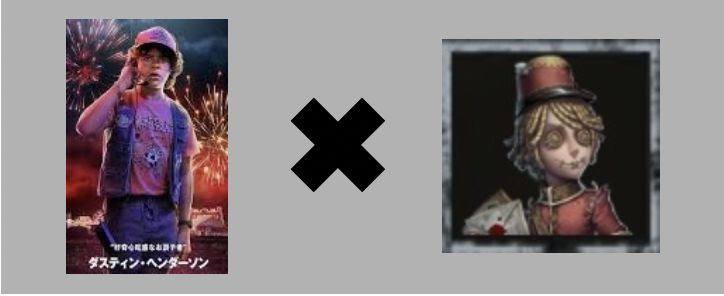
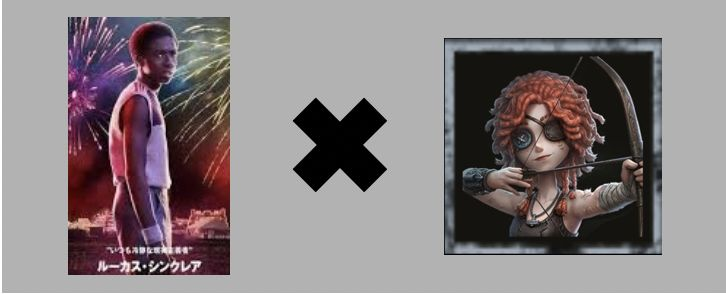
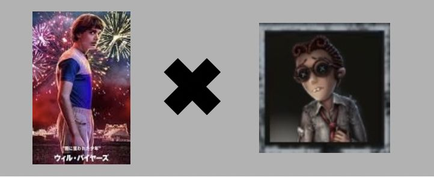
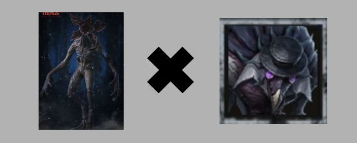
👹 デモゴルゴン × 悪夢
裏世界の恐怖の化身が悪夢として登場！花のように開く顔と鋭い牙が第五人格のプレイヤーに新たな恐怖体験を提供。アップサイドダウンの雰囲気も完璧に再現可能。
SPY×FAMILY
📺 アニメ3期連動の可能性
2025年10月予定： SPY×FAMILYアニメ第3期の放送開始に合わせたコラボが濃厚。秋のアニメシーズンと重なることで、相乗効果による大きな話題性が期待される。
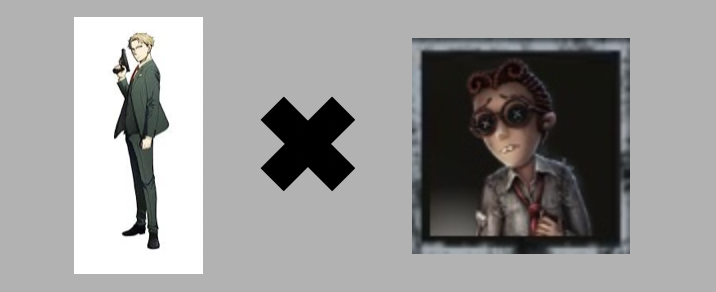
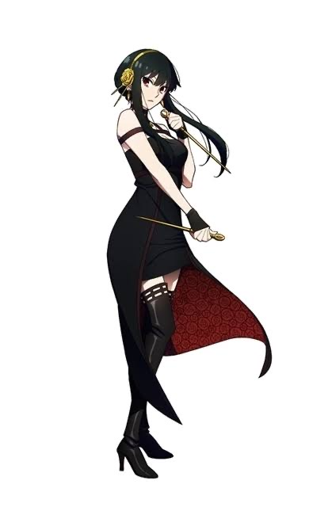
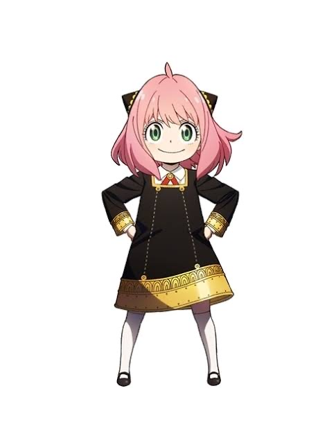
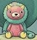
🐶 キメラ × 特別携帯品
未来を予知する超能力犬として登場！アーニャとの絆を表現する特別アイテムとして、プレイヤーの危険を事前に察知する能力を持つユニークな携帯品。
鋼の錬金術師
⚡ 大穴候補としての魅力
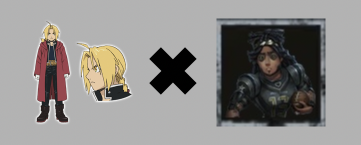
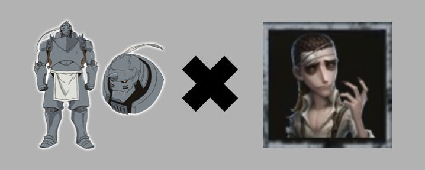
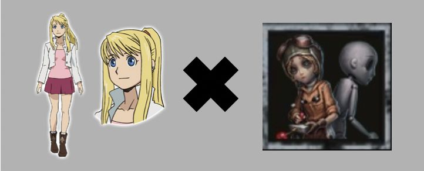
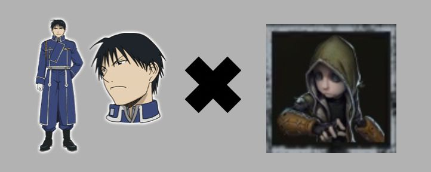
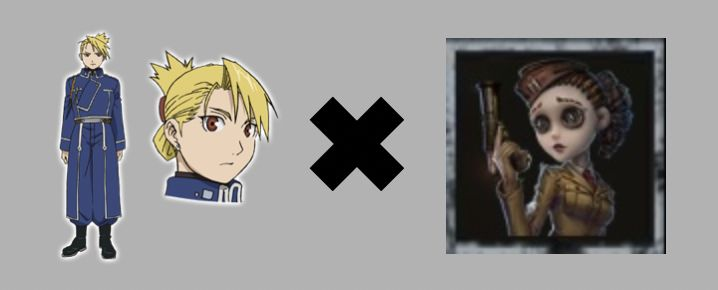
🔮 賢者の石 × 特別アイテム
究極の錬金術産物として特別なゲーム効果を持つアイテム！使用時に強力な能力を発動するが、代償として何かを失う「等価交換」システムを導入。
番外編：注目すべき他候補
コラボ実現の判断基準
分析指標⭐ 重要度ランキング
期待される新システム・機能
予想システム🎊 あなたの予想はどれ？
2025年、Identity Vに新たなコラボの風が吹く予感がひしひしと感じられます！
どの作品が実現するか、そして私たちの予想を超える意外なコラボが登場するかもしれません。
💭 ファンの皆さんの予想をお聞かせください！
コメント欄で、あなたが最も期待するコラボや、
「この作品もコラボしそう！」という独自の予想をシェアしてくださいね。
みんなでコラボの実現を心待ちにしながら、
今日も第五人格の世界を楽しみましょう！ 🎭✨
※ 本記事の予想は過去のコラボ傾向とファンの期待を基にした推測であり、
公式発表を保証するものではありません。最新情報は公式アカウントをご確認ください。
みんなのコメント